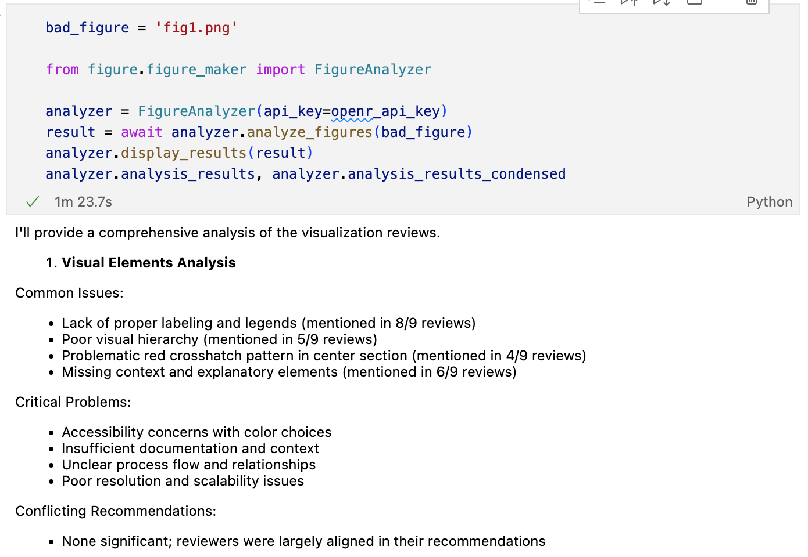

tex-Rex 🦖
AI-Powered Academic Paper Analysis Tool
Inspired by MIT's Nuclear Science and Engineering Communication Lab guidelines, tex-Rex provides automated feedback for each section of your scientific paper. Our analysis is based on established best practices in scientific communication and helps you craft clear, effective technical documents.
Abstract Analysis
Get comprehensive feedback on your abstract's structure and impact

Figure Analysis
Get insights on your figures and visualizations
Features
Abstract Analysis
- • Comprehensive structural analysis
- • Key components verification
- • Impact clarity assessment
- • Many more...
Introduction Evaluation
- • Structure and flow
- • Key points clarity
- • Technical accuracy checks
- • Many more...
Methods Evaluation
- • Procedure reproducibility
- • Technical accuracy checks
- • Statistical approach validation
- • Many more...
Installation
Requirements
- • Python 3.10 or higher
- • pip3
- • curl or wget
- • unzip
Quick Install
# Using curl
curl -O https://raw.githubusercontent.com/ai-tex-rex/ai-tex-rex.github.io/main/install.sh && chmod +x install.sh && ./install.shDocumentation
Usage Example
# Initialize analyzer
analyzer = AbstractAnalyzer(api_key="your-openrouter-api-key")
# Analyze text
result = await analyzer.analyze_abstract(your_text)
# Display results
analyzer.display_results(result)Resources
- • MIT NSE CommKit
- • Your institution's writing center
- • Field-specific style guides